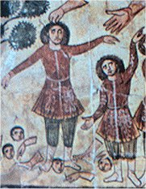

Apokryfy
Některé texty nebyly do konečné redakce Bible zahrnuty nebo se liší v různých kanonických verzích Bible podle vyznání. Židé jim říkají knihy deuterokanonické, pravoslavní křesťané nekanonické a protestanti apokryfní. Jde o rozšíření knih (Ester, Kniha Bárukova, Daniel) i celé knihy katolické Bible (Tóbijáš, Júdit, První a Druhá kniha Makabejská, Kniha Moudrosti, Kniha Sírachovcova (Ecclesiasticus)) původně přidané do Septuaginty, řeckého překladu Tenaku. Také sem můžeme zařadit mimobiblické spisy židovské (Aristeas, Henoch, Sybilliny věštby...) i křesťanské (Tomášovo evangelium, Protoevangelium Jakubovo, Pseudo-Tomášovo evangelium dětství, Arabské evangelium dětství, Nikodémovo evangelium (Akta Pilátova) atd.). Některé apokryfní texty vznikly až na konci 1. tisíciletí po Kristu.
|
BIBLE
Bible je nejen posvátným textem křesťanů, ale také základním textem křesťanské civilizace. Bez znalosti Knihy knih nebo Písma svatého, jak bývá Bible rovněž nazývána, neporozumíme ani křesťanskému náboženství, ani celé řadě uměleckých děl a nepochopíme důležité motivy v pozdějších literárních textech. Biblické knihy nevznikaly v Evropě, ale na území obývaném Židy (Palestina). Určité motivy byly převzaty z literatur Mezopotámie a Egypta. Autory jednotlivých příběhů neznáme, některé biblické knihy jsou připisovány konkrétním osobám (Davidovi Žalmy, Šalomounovi Píseň písní). Věřící jsou přesvědčeni, že původcem biblických textů je Bůh.
Starý a Nový zákon
Křesťanská Bible se skládá ze dvou hlavních částí – Starého a Nového zákona (přesnější výraz je smlouva, ne zákon). Židovské náboženství ale Nový zákon neuznává a místo názvu Starý zákon používá zkratku Tenak nebo Tanach – podle počátečních písmen jeho tří částí (Tóra, Neví'ím, Ketúvím – Zákon, Proroci, Spisy). Texty Tenaku a Starého zákona se shodují, jsou pouze jinak rozděleny. Starý zákon vznikal postupně od 9. do 5. stol. př.n.l. a je psán hebrejsky (s pasážemi v aramejštině). Jednotlivé knihy byly nejprve tradovány ústně a posléze postupně zapisovány. V době babylonského zajetí, kdy se ocitli židé na samé hranici existence, došlo k sjednocení celého učení. Autorem konečné redakce z roku 444 př.n.l. byl Ezdráš. Starý zákon tvoří Pět knih Mojžíšových (Pentateuch), Historické knihy, Knihy básnické a mudroslovné a Prorocké knihy. Nový zákon je mnohem kratší, vznikl v průběhu prvních dvou staletí po Kristu, je psán řecky (přestože Ježíš mluvil aramejsky) a tvoří ho 4 evangelia, Skutky apoštolské, Listy (Epištoly) a Zjevení Janovo (Apokalypsa).
Velmi dobrou orientaci v Bibli umožňuje jednotný systém dělení na knihy, kapitoly a verše, který pochází z 13. stol. Např. údaj Mt 27,45-56 znamená, že si máme nalistovat knihu Matouš, kapitolu 27, verše 45 až 56 (tato část Nového zákona pojednává o Ježíšově smrti).
|
Historie
Židovské kmeny začaly pronikat z Arabského poloostrova do Palestiny ve 14. stol. př.n.l. Hlavním městem izraelského království (1000–926 př.n.l.) byl Jeruzalém. Odtud vládli první králové Saul, David a Šalomoun, po jehož smrti se království rozpadá na severní Izrael a jižní Judsko. Izrael dobyli v roce 722 př.n.l. Asyřané a Judsko roku 578 př.n.l. Babyloňané. Jejich panovník Nabukadnesar II. dal zničit Jeruzalém a odvedl Židy už podruhé do zajetí (babylonská zajetí 598-538 př.n.l.). Po dobytí Babylonie jim perský král Kýros umožnil návrat domů. V roce 64 př.n.l. dobyli Jeruzalém Římané, kteří v roce 70 n.l. zničili jeruzalémský chrám a po neúspěšném povstání Bar Kochby (132-135 n.l.) vyhnali Židy z Palestiny. Centrem židovské diaspory se stala egyptská Alexandrie, ale Židé žili i v jiných oblastech (Babylonie, Španělsko, Německo atd.). Až do dnešních dnů se musejí vyrovnávat s antisemitismem, který měl v historii nejrůznější podoby včetně segregace (ghetta) a vyvražďování (pogromy, holocaust). Od roku 1948 mají Židé vlastní stát Izrael.
Vysvětli význam slov bibliografie a bibliotéka.
Víš, k čemu slouží konkordance?
|
Starý zákon a judaismus
Slovem Žid označujeme příslušníka izraelského národa, zatímco žid je stoupenec židovského náboženství – judaismu. Judaismus zapovídá zobrazování Boha, protože to považuje za modloslužebnictví.

Interiér Španělské synagogy v Praze
|
STARÝ ZÁKON a JUDAISMUS
Hlavní postavou Bible je bezesporu Bůh. Ve Starém zákoně je to především trestající Otec (vyhnání Adama a Evy z Ráje), který určuje základní pravidla chování (Desatero) a zkouší oddanost věřících (Jób). Označován je slovy Jahve nebo Elohim, překládaných jako Bůh nebo Hospodin. Židé věří, že existuje pouze jediný a všemohoucí Bůh a že si je vyvolil mezi ostatními národy. Pokud se budou držet jeho přikázání, po příchodu konce světa dojdou spasení. Tanak ukazuje na konkrétních lidských osudech, že to není právě jednoduché.
K základním židovským spisům patří Talmud, který obsahuje tradiční zákony a pravidla (mišna) a výklady rabínů (gemara). Mišna (opakování, studium) pochází z roku 200 n.l. a zahrnuje 63 traktátů. Gemara (dokončení) vznikala v letech 200 až 500 n.l. Talmud obsahuje stovky zákazů a přikázání, která není snadné dodržet. Židovská bohoslužba probíhá v synagoze, předčítají se při ní svitky posvátné Tóry.
Ze 13. stol. pochází mystický spis Zohar (Kniha jasu) připisovaný rabínu Šimonu bar Jochajovi, autorem učení známého jako kabala je ale spíše španělský rabín Moše de Leon.
|

Kabala zahrnuje mystické učení o Stromu života, který se skládá z deseti sefír.
|
Tóra
Genesis (Gn), Exodus (Ex), Leviticus (Lv), Numeri (Nu), Deuteronomium (Dt)
Předčítání ze svitku Tóry
Putování Josefovo
|
Pět knih Mojžíšových (Pentateuch)
Jádrem Starého zákona je židovská Tóra neboli Pět knih Mojžíšových (Penatateuch). Obsahuje především mytologické příběhy, jejichž reálný základ je sporný. Na rozdíl od jiných národů se židovská mytologie zabývá samotným stvořením pouze krátce. Chybějí příběhy o bozích, protože judaismus uznává pouze jednoho všemohoucího Boha, šetří se nadpřirozenými bytostmi (andělé) a události jsou seřazeny přísně chronologicky. Do centra pozornosti se dostávají lidé, kteří se běžně dožívají několika staletí (Metuzalém). Hospodin do jejich života velmi často zasahuje, určuje pravidla chování a důsledně trestá jejich porušení.
Genesis začíná stvořením světa a končí příchodem Židů do Egypta. Exodus vypráví o Mojžíšovi, vyvedení Izraelitů z Egypta a uzavření smlouvy s Bohem (Desatero). Leviticus popisuje židovské obřady a předpisy. Numeri zachycuje putování Židů do Zaslíbené země a Deuteronomium vyzdvihuje význam Mojžíše a židovských obřadů i zákonů.
Převyprávěj následující biblické příběhy: vyhnání z ráje, Kain a Ábel, Sodoma a Gomora, Noemova archa, zmatení jazyků, obětování Izáka, Josef a jeho bratři, Židé v Egyptě, pouť do země zaslíbené.
Kde se o nich v Bibli píše? Najdi příslušnou knihu, kapitolu a verše! Možná ti pomůže Bible online.
|
Hora Ararat, na které přistál Noe
Svitky Tóry se předčítají při židovských bohoslužbách v synagoze.
|
Historické knihy
Jozue (Joz), Soudců (Sd), Rút (Rt), První Samuelova (1S), Druhá Samuelova (2S), První Královská (1Kr), Druhá Královská (2Kr), Knihy letopisů – Paralipomenon (1Pa, 2Pa), Ezdráš (Ezd), Nehemjáš (Neh), Ester (Est)
Které tři biblické příběhy najdeš na následujících místech Bible? Sd 16,1-31; 1S 17, 1-57; 1Kr 3,16-28
Převyprávěj je vlastními slovy.
|
Historické knihy
Velká část Starého zákona se věnuje dějinám Bohem vyvoleného židovského národa v Zemi zaslíbené. Nejde ovšem o historii ve vědeckém smyslu slova. Hospodin opět velmi často zasahuje do osudů lidí a jednotlivé příběhy potvrzují jeho všemohoucnost (Jozue popisuje zázračné dobytí Jericha). Nejstaršími vládci židovských kmenů byli soudci (Samson), které vystřídali králové (Saul, David, Šalomoun). David proslul nejen svou odvahou, ale také básnickým nadáním (jsou mu připisovány žalmy), Šalomoun dal zase vystavět chrám a byl velmi moudrým panovníkem. I oni ale zhřešili a museli za porušení přikázání pykat. Po smrti Šalomouna se jednotné království rozdělilo na dvě a králové Izraele a Judska spolu začali válčit. Nakonec oba státy podlehly útokům Asyřanů a Babyloňanů a špičky národa byly odvlečeny do zajetí. Po pádu Babylonie se židé vracejí zpět do Jeruzaléma a obnovují zničený Šalomounův chrám.
|

Zeď nářků je jediný zbytek po Šalomounově chrámu v Jeruzalémě, který zbořili Římané v roce 70 n.l.
|
|
Na čem je založen Bradfordův humor?
Najdi si tento příběh v Bibli a srovnej styl obou textů.
|
|
Roark Bradford (1896-1948)
Biblí se inspirovala celá řada spisovatelů. Např. americký humorista Roark Bradford [bredfrd] formou černošského folklóru převyprávěl vybrané biblické příběhy – Černošský Pán Bůh a páni Izraeliti a Starej zákon a proroci.
|
Knihy básnické a mudroslovné
Jób (Jb), Žalmy (Ž), Přísloví (Př), Kazatel (Kaz), Píseň písní (Pís)
Obrovský sedmiramenný židovský svícen (menora) stojí před jeruzalémským parlamentem.

Davidova hvězda se stala symbolem židovství až ve středověku.
|
Knihy básnické a mudroslovné
Obsah těchto knih je velice různorodý. V první z nich vydá Hospodin oddaného věřícího Jóba Satanovi, který ho připraví o majetek, zdraví i rodinu. Jób přesto dále velebí jediného Boha a neoddá se modloslužebnictví. V těžké zkoušce obstojí a vše je mu nakonec vráceno. Žalmy jsou chvalozpěvy, které se obracejí k Bohu. Jejich celkový počet je 150 a za autora většiny z nich je považován král David. Zbylé knihy jsou připisovány Šalomounovi. Přísloví ukazují jeho moudrost, v Kazatelovi varuje před světskou pomíjivostí a vyzdvihuje službu Bohu a Píseň písní je sbírka milostné a svatební lyriky.
Kazatel (Kaz 3,1-8)
Všeliká věc má jistý čas, a každé předsevzetí pod nebem svou chvíli.
Jest čas rození i čas umírání, čas sázení a čas vykopání, což vsazeno bývá;
Čas mordování a čas hojení, čas boření a čas stavení;
Čas pláče a čas smíchu, čas smutku a čas proskakování;
Čas rozmítání kamení a čas shromažďování kamení, čas objímání a čas vzdálení se od objímání;
Čas hledání a čas ztracení, čas chování a čas zavržení;
Čas roztrhování a čas sšívání, čas mlčení a čas mluvení;
Čas milování a čas nenávidění, čas boje a čas pokoje.
|
Píseň písní (Pís 4,1-7)
Krása milé
Jak jsi krásná, má milá,
jak jsi krásná!
Tvůj zrak se třpytí jako holoubci
ve stínu závoje.
Tvé vlasy jsou jako stádo koziček,
které se vlní svahy giládskými.
Tvé zuby jsou jako ovce před stříží,
když vyšly z koupadla,
a všechny budou míti dvojčátka,
a neplodná z nich ani jediná.
Jak karmínová šňůrka jsou tvé rty,
a ústa tvá jsou spanilá,
tvá skráň je prasklý granátový plod
ve stínu závoje.
Jako věž Dávídova je tvá šíj
s ochozy kolem
a tisíc štítů na ní zavěšeno,
a vesměs štítů rytířských.
Tvá ňadra jsou jako dvě mláďátka,
dvojčátka gazelí,
která se pasou v liliích.
Až odvane den
a prchnou stíny,
půjdu si na horu myrhovou,
pahorek kadidlový.
Vše na tobě je krásné, milá má,
a není poskvrny na tobě.

Židovský hřbitov
Která z mudroslovných knih tě zaujala nejvíce? Proč?
|
Prorocké knihy
Izajáš (Iz), Jeremjáš (Jr), Pláč (Pl), Ezechiel (Ez), Daniel (Da), Ozeáš (Oz), Jóel (Jl), Ámos (Am), Abdijáš (Abd), Jonáš (Jon), Micheáš (Mi), Nahum (Na), Abakuk (Abk), Sofonjáš (Sf), Ageus (Ag), Zacharjáš (Za), Malachiáš (Mal)
Co prorokoval Izajáš? Pokud se ti zdá kralický překlad příliš nesrozumitelný, vyhledej si tuto pasáž v modernějším znění.
|
Prorocké knihy
Závěrečné knihy Starého zákona popisují kromě dalších osudů židovského národa především život četných proroků (Jeremjáš, Ezechiel, Jonáš...) a jejich vidění. Proroci předpověděli brzký konec světa, obnovení Jeruzaléma a příchod Mesiáše.
|

Jedno z Ezechielových vidění zachycené v synagoze Dura Europos v Sýrii
|
Starý zákon
Hebrejský text se čte zprava doleva.
|
Jazyk a písmo
Starý zákon je psán hebrejsky (krátké pasáže jsou v aramejštině). Hebrejština patří mezi semitské jazyky. Její podoba na dlouhou dobu ustrnula, ale v 19. stol. se opět stala živým jazykem (moderní hebrejština se nazývá ivrit a je úředním jazykem v Izraeli). Hebrejské písmo je hláskové a vzniklo z fénického. Píše se zprava doleva, samohlásky se vynechávají. Jméno Boží se tedy zapisovalo jako JHVH.
Kabalisté věří, že pokud se ho podaří správně vyslovit, nastane konec světa. Také tvrdí, že pravý význam Tóry se projeví, pokud bude rozložena na jednotlivá písmena a znovu, tentokrát správně, složena. Jejich mystické rozjímání se soustřeďuje na přesmyčky jednotlivých slov. Protože každému písmenu odpovídá nějaké číslo, hledají kabalisté v textech především číselné vztahy.
|

Nápis v aramejštině
|
Císař Konstantin Veliký (306-337 n.l.) zrovnoprávnil v roce 313 ediktem milánským křesťanství s ostatními náboženstvími v římské říši, a učinil tak přítrž pronásledování jeho stoupenců.
|
NOVÝ ZÁKON A KŘESŤANSTVÍ
Nový zákon (lépe smlouva) se od Starého zákona v mnohém liší. Je několikanásobně kratší, zachycuje nedlouhé časové období působení Ježíše a jeho učedníků a je psán řecky. Společně se Starým zákonem tvoří Bibli – základní text křesťanů.
Římané viděli v křesťanech hrozbu, a proto je pronásledovali. Ježíše i jeho stoupence čekala mučednická smrt. Zatímco pro židy byli křesťané nevítanou konkurencí, římským císařům vadilo, že neuznávají jejich božství. Císař Nero dal roku 64 n.l. zapálit Řím a obvinil z tohoto zločinu křesťany, v pronásledování křesťanů pokračovali i jeho nástupci, a proto se věřící museli často schovávat v podzemních katakombách (původně šlo o pohřebiště).
Situace se zlepšila až za vlády císaře Konstantina Velikého (306-337 n.l.), který zrovnoprávnil křesťanství s ostatními náboženstvími (edikt milánský z roku 313), zrušil trest smrti ukřižováním, společně s matkou Helenou podporoval výstavbu křesťanských chrámů, roku 325 předsedal prvnímu ekumenickému koncilu v Nikaji a nakonec se nechal sám pokřtít. Oficiálně byl ale nadále představitelem tradičního pohanského kultu. Naprosté vítězství křesťanství ve východořímské říši znamenalo až zavření pohanských škol císařem Justiniánem roku 529.
|
Nový zákon a judaismus
Nový zákon popisuje příchod Mesiáše a další události, které předpovídali proroci ve Starém zákoně. Ohlášeným Spasitelem je Ježíš z Nazaretu. Židé ho ale za Mesiáše nepovažují a na pravého Spasitele stále čekají. Proto také judaismus Nový zákon neuznává.
Znáš nějaké křesťany osobně? Jací jsou? Co si o nich myslíš?
Znáš osobně nějaké židy nebo muslimy? V čem jsou jiní?
Ke kterému vyznání se hlásíš ty? Proč?
Které ze světových náboženství je ti nejbližší? Proč?
Co mají různá náboženství společného a v čem se liší?
|
Evangelia
Matouš (Mt), Marek (Mk), Lukáš (L), Jan (J)
Moderní rekonstrukce Ježíšovy podoby provedená na základě statistických dat o obyvatelstvu Palestiny na počátku letopočtu.
|
Evangelia
Hlavní postavou evangelií je Ježíš Kristus. Evangelia (dobrá zvěst) nesou jména jeho učedníků, ale toto autorství je sporné. Všechny čtyři knihy popisují životní osudy a působení Ježíše z Nazaretu. Jednotlivé příběhy se častokrát opakují nebo doplňují. Nejzajímavější jsou Ježíšovy zázraky, mnohem důležitější jsou ale pasáže, ve kterých vysvětluje svoje učení. Ježíš zdůrazňoval, že respektuje Starý zákon a že přišel jeho myšlenky naplnit, ne zrušit. Mnohdy je ale mnohem náročnější. Místo přikázání a trestů nabízí věřícím odpuštění hříchů a lásku. Kromě konkrétních činů vyjadřoval své myšlenky v krátkých podobenstvích.
Znáš hlavní momenty z Ježíšova života? Co víš o narození Ježíše, Herodovi, Janu Křtiteli, Ježíšových zázracích, Jidášovi, Pilátovi, smrti Ježíše...
|
Zobrazování Ježíše Krista
Ježíšovu podobu neznáme. Zprvu byl připomínán pomocí symbolů – ryba, beránek, řecká písmena alfa a omega nebo XP, kříž...
Pozdější vyobrazení zachycují Krista jako Dobrého pastýře nebo krále sedícího na trůně. Podoba jeho tváře podléhala dobovým konvencím.
|
Skutky apoštolské
Skutky apoštolské (Sk)

Domnělý otisk Ježíšovy tváře na tzv. Turinském plátně
|
Skutky apoštolské
Druhá část Nového zákona vypráví o dalších osudech apoštolů po Ježíšově zmrtvýchvstání a o vzniku křesťanské církve. Kristovi učedníci byli pronásledováni židy i Římany a řada z nich zemřela mučednickou smrtí. Mezi nejobávanější nepřátele křesťanů patřil římský občan Saul (Šavel). Po své konverzi a křtu přijal jméno Pavel a naopak začal šířit Ježíšovo učení. Jeho misionářská činnost byla zaměřena na Nežidy. Díky Pavlovi se nové náboženství začalo šířit mezi ostatními národy a křesťanská obec se velmi rozrostla.
|

Které další typické způsoby zobrazování Ježíše znáš? Popiš je.
|
Epištoly
Římanům (Ř), První list Korintským (1K), Druhý list Korintským (2K), Galatským (Ga), Efezským (Ef), Filipským (F/p/), Koloským (Ko), První list Tesalonickým (1Te), Druhý list Tesalonickým (2Te), První list Timoteovi (1Tm), Druhý list Timoteovi (2Tm), Titovi (Tt), Filemonovi (Fm), Židům (Žd), List Jakubův (Jk), První list Petrův (1P/t/), Druhý list Petrův (2P/t/), První list Janův (1J), Druhý list Janův (2J), Třetí list Janův (3J), List Judův (Ju)
|
Listy
Listy neboli Epištoly jsou dopisy apoštolů adresované jednotlivým křesťanským obcím (např. v Římě, Korintu, Efezu, Soluni atd.). Autorem prvních čtrnácti je Pavel, jména ostatních autorů se objevují v názvech epištol. Obsahem dopisů jsou především rady, jak duchovně i organizačně spravovat křesťanské obce.
|
Církev
V epištolách nacházíme první zmínky o vzniku církve, ale věrouka katolické církve obsahuje řadu dogmat, která se o Bibli neopírají. Byla přijata mnohem později na církevních koncilech. Jde o uctívání svatých patronů, poskytování sedmi svátostí, učení o Boží trojici, povolení zobrazovat Boha, volba papeže atd.
Co je nejdůležitější pro tebe? Víra, naděje nebo láska?
Napiš krátké zamyšlení nebo povídku s názvem „Láska, víra, naděje“.
|
Apokalypsa
Zjevení Janovo (Zj)
V římských katakombách se zachovaly nástěnné malby s vyobrazením věřících vzývajících Boha se zdviženýma rukama (oranti).
|
Zjevení Janovo
Poslední knihou Bible je Zjevení Janovo neboli Apokalypsa. Jde o prorockou knihu, ve které apoštol Jan popisuje svoje vidění. Stejně jako židovští proroci ohlašuje brzký příchod konce světa doprovázený velmi sugestivními fantastickými výjevy. Beránek (Ježíš) rozlamuje sedm pečetí na knize, potom andělé postupně troubí na sedm polnic a vylévají na zemi sedm nádob Božího hněvu, přičemž pokaždé dojde k nějakému strašnému neštěstí. Strhne se boj s drakem (satan) a podivnými šelmami. Vše skončí soudem nad nevěstkou a konečným vítězstvím Beránka. Mrtví budou souzeni podle svých činů, z nebe se snese nový Jeruzalém a jediným vládcem se stane Ježíš.
|
Andělé jsou okřídlení poslové Boží. Také symbol zla Satan (Ďábel) a jeho služebníci byli původně andělé, ale protože propadli hříchu, nazývají se padlými. Tyto bytosti jsou podrobně popsány v apokryfní knize Henoch.
Jak si představuješ konec světa ty? Popiš ho nebo nakresli.
|
Překlady Bible
Zlomek Janova evangelia v řečtině
Která ustálená rčení mají svůj původ v Bibli?
Která z pozdějších literárních děl využívají biblické motivy? Jak je obměňují?
|
Překlady Bible
Z 2. stol. př.n.l. pochází Septuaginta – překlad Starého zákona do řečtiny, který vznikl pro potřeby židovské obce v Alexandrii. Podle apokryfní knihy Aristeas na něm pracovalo 72 překladatelů 70 dní. Nový zákon je psán řecky, přestože Ježíš i jeho učedníci mluvili aramejsky (mrtvý semitský jazyk blízký syrštině).
Pro šíření křesťanství v římské říši byl velmi významný překlad celé Bible do latiny z roku 405 n.l. Nazývá se Vulgata (obecně rozšířený) a jeho autorem byl svatý Jeroným (348–420). Tento překlad dlouho používala katolická církev při bohoslužbách.
Při překládání Bible se velmi dbalo na to, aby byl dodržen správný význam slov, což bylo v době, kdy se literární díla překládala velmi volně, takže šlo spíše o přejímání typických motivů, velkým pokrokem. Díky tomu se staly překlady Bible základem národních literatur – Wulfilův překlad do vizigótštiny (4. stol.), staroslověnský překlad Cyrila a Metoděje (9. stol.), česká Bible leskovicko-drážďanská (60. let 14. století, rukopis shořel), německý překlad Lutherův (16. stol.) atd. Někdy doprovázel překlady i vznik nového písma (hlaholice).
V naší učebnici citujeme z Bible kralické (1579-1594) a moderního ekumenického překladu, na kterém se shodli čeští katolíci i protestanti.
|
Rukopisy od Mrtvého moře
O dobré práci opisovačů biblických textů svědčí nálezy v Kumránu u Mrtvého moře. V roce 1947 zde místní pastevec náhodou narazil na ukryté nádoby, obsahující části Starého zákona z 1. stol. n.l. Ukázalo se, že se od ostatních dochovaných rukopisů z přelomu 1. a 2. tisíciletí nijak nelišily.

Septuaginta (zlomek)
|
Internetové stránky
Bible kralická
Bible, Nový zákon
Bible online, vyhledávání
Vulgata, latinský překlad Bible
Septuaginta, řecký překlad Starého zákona
Apokryfní knihovna Centra biblických studií
Apokryfy
Diane Palley: O umění vystřihovánek, Deset Sefír, článek o kabale
Všeználek, židovské a křesťanské svátky, Desatero...
Anton Szandor LaVey: Satanská bible
Image database for Biblical studies, fotogalerie

Raně křesťanský kostel San Vitale v italské Ravenně
|
Doporučená četba
Bible, Písmo svaté Starého a Nového zákona, ekumenický překlad
Bradford, Roark: Černošský Pán Bůh a páni Izraeliti, Starej zákon a proroci
Godwin, Malcolm: Andělé, Ohrožený druh, Volvox globator, Praha 1997
Kazantzakis, Nikos: Kristus znovu ukřižovaný, Poslední pokušení
Knihy tajemství a moudrosti, Mimobiblické židovské spisy: pseudografy (3 svazky), přel. Z.Poláček a kol., Vyšehrad, Praha 1995 (Aristeas, Henoch, Sybilliny věštby...)
Kosidowski: Příběhy mrtvého moře, Práce, Praha 1963
Lange, Nicholas de: Svět Židů, přel. L.Mertl, Knižní klub, Praha 1996
Neznámá evangelia, Vyšehrad, Praha 2001
Olbracht, Ivan: Biblické příběhy
Pavlát, Leo: Osm světel, Příběhy podle Talmudu a Midraše
Píseň písní, přel. Seifert, Segert, Odeon, Praha 1969
Příběhy apoštolů, Novozákonní apokryfy, Vyšehrad
Schubert, Kurt: Židovské náboženství v proměnách věků, přel. J.Slabý, Vyšehrad, Praha 1994
Slovník biblické kultury, přel. J.Binder a kol., Ewa edition, Praha 1992
Sokol, Jan: Čtení z Bible, Česká biblická společnost, Praha 1996
Wiesel, Elie: Bible, Postavy a příběhy, přel. A.Bláhová
Wiesel, E.: Talmud, Portréty a legendy, přel. A.Bláhová
|
Připrav si referát o některé z uvedených knih nebo internetových stránek.
Tipy
Vyšehrad, nakladatelství zaměřené na náboženskou literaturu
Exkurze
Židovské muzeum v Praze, speciální vzdělávací programy pro školy
Zřejmě nejstarší vyobrazení křtu
|
|